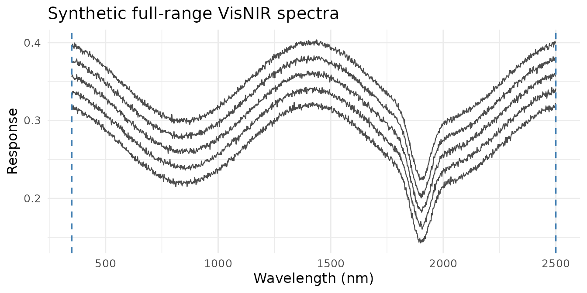

autoSpectra predicts soil properties (organic carbon, clay, pH, nitrogen and 30 others) from VisNIR or MIR spectra. It uses models trained on the Open Soil Spectral Library (OSSL v1.2).
This guide covers the usual path: getting your spectra into the right shape, downloading the models, predicting, and reading the result, including how far to trust it.
The four model families
Each spectral domain has two families. Both are trained on the same OSSL data and predict the same properties.
| Family | Sensor | Method | Prediction intervals |
|---|---|---|---|
OSSL_VisNIR |
VisNIR, 350–2500 nm | masked soilVAE | not yet |
OSSL_VisNIR_Cubist |
VisNIR, 350–2500 nm | Cubist + PCA(120) | yes |
OSSL_MIR |
MIR, 600–4000 cm⁻¹ | masked soilVAE | not yet |
OSSL_MIR_Cubist |
MIR, 600–4000 cm⁻¹ | Cubist + PCA(120) | yes |
names(model_registry)
#> [1] "OSSL_VisNIR" "OSSL_MIR" "OSSL_VisNIR_Cubist"
#> [4] "OSSL_MIR_Cubist"
get_family("OSSL_VisNIR_Cubist")$citation
#> [1] "Safanelli et al. (2025) doi:10.1371/journal.pone.0296545"- Cubist + PCA replicates the method of Safanelli et al. (2025). It is the family validated on held-out datasets (see How far to trust the predictions) and the only one that returns prediction intervals. For a full-range instrument, start here.
- The masked soilVAE is built for instruments that cover only part of the range, such as handheld NIR units. It learns to predict from whatever bands are present.
Your spectra
predict_soil() takes a data frame with:
- a
Soil_IDcolumn, and - one numeric column per band, named by its wavelength (nm) or
wavenumber (cm⁻¹):
"350","352", …
What the values should be:
- VisNIR: reflectance, as a fraction (0–1) or a percentage (0–100). The package converts it to absorbance itself.
- MIR: absorbance.
You do not need to match the model’s band spacing or range. Spectra are resampled to the model’s grid automatically.
Here are two small synthetic data sets standing in for real measurements. One is from a full-range laboratory instrument, the other from a handheld unit covering 908–1676 nm.
set.seed(1)
make_spectra <- function(wl, n, prefix) {
M <- t(vapply(seq_len(n), function(i)
0.25 + 0.1 * i / n + 0.05 * sin(wl / 180) -
0.08 * exp(-((wl - 1900) / 60)^2) +
rnorm(length(wl), sd = 0.002),
numeric(length(wl))))
df <- data.frame(Soil_ID = sprintf("%s_%02d", prefix, seq_len(n)), M,
check.names = FALSE)
names(df)[-1] <- as.character(wl)
df
}
lab <- make_spectra(seq(350, 2500, by = 2), n = 5, prefix = "lab")
handheld <- make_spectra(seq(908, 1676, by = 6), n = 5, prefix = "micro")
lab[1:3, 1:5]
#> Soil_ID 350 352 354 356
#> 1 lab_01 0.3152972 0.3167117 0.3144618 0.3191066
#> 2 lab_02 0.3333415 0.3326532 0.3372445 0.3357958
#> 3 lab_03 0.3562228 0.3585149 0.3575927 0.3553176
plot_spectra(lab, family = get_family("OSSL_VisNIR"),
title = "Synthetic full-range VisNIR spectra")
How partial coverage is handled
When your instrument covers only part of the model’s range, the bands it does not measure become missing after resampling. A coverage mask records which bands are real:
fam <- get_family("OSSL_VisNIR")
wl <- get_wavelengths(handheld)
X <- resample_to_grid(as.matrix(handheld[, wl$cols]), wl$wl, fam$wavegrid)
mask <- mask_from_coverage(X)
c(model_bands = ncol(mask), measured_bands = sum(mask[1, ]))
#> model_bands measured_bands
#> 1076 385The handheld unit fills 385 of the model’s 1,076 bands. The masked
soilVAE standardises each spectrum using only those bands
(apply_snv_masked()) and was trained with random band
dropout, so it expects gaps like this. The Cubist family has no such
mechanism. Use it with instruments that cover the full range.
A row with no measured bands at all carries no information, and should never reach a model:
has_spectral_coverage(mask)
#> [1] TRUE TRUE TRUE TRUE TRUEDownload the models
The trained models are published on Zenodo. You download
them once. They are stored under models/, or wherever
options(autoSpectra.model_dir = ...) points.
download_ossl_models("OSSL_VisNIR_Cubist") # one family
download_ossl_models() # all four
models_available()The soilVAE families also need a working Keras installation. The
Cubist families need only the Cubist package.
install.packages("keras3")
keras3::install_keras()Predict
my_spectra <- readxl::read_excel("my_visnir_spectra.xlsx")
pred <- predict_soil(my_spectra, "OSSL_VisNIR_Cubist",
properties = c("oc", "clay.tot", "ph.h2o"),
with_pi = TRUE)
format_predictions(pred)The result has one row per sample and one column per property, in the
property’s original units. Use property_label() to look up
a unit:
sapply(c("oc", "clay.tot", "ph.h2o"), property_label)
#> oc clay.tot ph.h2o
#> "Organic Carbon (OC, %)" "Clay (%)" "pH (H₂O)"With with_pi = TRUE, the Cubist families add
<property>_lo and <property>_hi
columns. They give a 68% prediction interval by default; set it with
confidence =. The intervals are conformal and scaled to
each sample, so samples the model finds harder get wider intervals.
Check the applicability domain
A prediction is only as good as the model’s familiarity with the
spectrum. predict_applicability() flags samples that fall
outside the training data:
ad <- predict_applicability(my_spectra, "OSSL_VisNIR_Cubist", prop = "oc")
head(ad) # score, threshold, in_domain
plot_applicability(ad)The Cubist families use the Q-statistic: the spectral residual left after projecting onto the 120 principal components. The soilVAE families use the Mahalanobis distance in the latent space. Either way, treat out-of-domain predictions with caution, whatever the interval says.
How far to trust the predictions
The number that matters is how a model does on soils from a source it never saw, not on a random sample of its own training data. We measure this with leave-one-dataset-out (LODO) validation: each OSSL contributing dataset is held out in turn.
Weighted R² under LODO, Cubist families:
| Property | VisNIR | MIR |
|---|---|---|
Organic carbon (oc) |
0.57 | 0.81 |
Total nitrogen (n.tot) |
−4.34 | 0.68 |
pH in water (ph.h2o) |
0.48 | 0.76 |
Clay (clay.tot) |
0.43 | 0.13 |
A random 80/20 split of the same data gives R² 0.83–0.99 for every one of these. That gap is the difference between predicting soils like the training data and predicting soils from a new source. Expect the LODO figures when your samples come from a region or laboratory that is not in the OSSL. VisNIR nitrogen fails badly on one held-out dataset, which is what drives its negative R². Clay from MIR also transfers poorly.
The README has the full tables with RMSE, CCC and the comparison against Safanelli et al. (2025).
Why predictions cannot explode
Organic carbon, nitrogen and most other concentrations are modelled
on a log1p scale and transformed back with
expm1(). That inverse is exponential: a modest error on the
log scale becomes an enormous one in original units. For this reason,
autoSpectra bounds every prediction to the range the model was
calibrated on before transforming back:
# A model calibrated on organic carbon between 0.1% and 30%
y_train <- apply_target_transform(c(0.1, 0.5, 1, 2, 5, 12, 30), "oc")
bounds <- target_bounds(y_train)
# Three predictions on the log scale; the last is far outside calibration
y_hat <- log1p(c(3, 40, 4000))
expm1(y_hat) # unbounded
#> [1] 3 40 4000
invert_target_transform(y_hat, "oc", bounds = bounds) # what autoSpectra returns
#> [1] 3.00000 35.63196 35.63196A prediction outside the calibration range is capped near its edge rather than extrapolated. This is not a fix for a bad prediction: the applicability-domain check is what tells you a sample is unfamiliar.
The OSSL data
autoSpectra never redistributes OSSL data. The published models
contain only model parameters and aggregate statistics. Every release
archive is checked by audit_release_archive() before it is
uploaded.
To retrain the models yourself, the data are downloaded from the official OSSL storage bucket into a cache in your user directory:
ossl_download() # about 2 GB, cached locally
ossl_cache_dir() # where it went
train_ossl_models("OSSL_VisNIR_Cubist", properties = "oc")Citing
citation("autoSpectra")If you use the OSSL data or the pre-trained models, also cite the OSSL. If you use the Cubist families, also cite Safanelli et al. (2025), doi:10.1371/journal.pone.0296545.